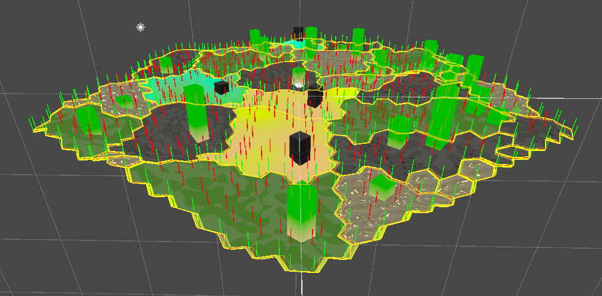

Here is a collection of spells!

Five Ws and one H
Five ws and one h is a method for establishing context.
- Who is the project team? Who are we working with? Who is involved?
- What is the core challenge? What is the goal? What knowledge are we using?
- When is the deadline? When do we do different tasks?
- Why this project? Why this project now?
- How are we executing this project? How are we making decisions? How are we evaluating this project?
MoSCoW
MoSCoW is a prioritisation technique borrowed from Agile. For scoping priorities. The letters stand for:
- Must Have — vital, if it is not there the project should not be done
- Should Have — important but not vital
- Could Have / Nice to have — desirable but less important
- Won’t Have this time — agreed upon things that project won’t have
Lightweight social rules for learning spaces
The Recurse Center has some nice social rules which adress some of the behaviour which can be destructive to a good learning(or projecting) environment.
- No feigning surprise “You shouldn’t act surprised when people say they don’t know something.”
- No well-actuallys “A well-actually happens when someone says something that’s almost - but not entirely - correct, and you say, “well, actually…” and then give a minor correction.”
- No back-seat driving “If you overhear people working through a problem, you shouldn’t give advice unless you’re actively participating in the conversation.”
- No subtle -isms “Our last social rule bans subtle racism, sexism, homophobia, transphobia, and other kinds of bias.”
Decision memos
Decision memos are short documents describing a problem, a solution, and how the solution was arrived at.
- Define the problem
- Summarise your findings
- Step back and show how you got there
Some instructions for running a stand-up meeting
Some instructions for running a stand-up meeting written by Richard Lemarchand for their book A Playful Production Process.
A deck of lenses
A deck of perspectives to employ to a project. From the book The Art of Game Design by Jesse Schell.